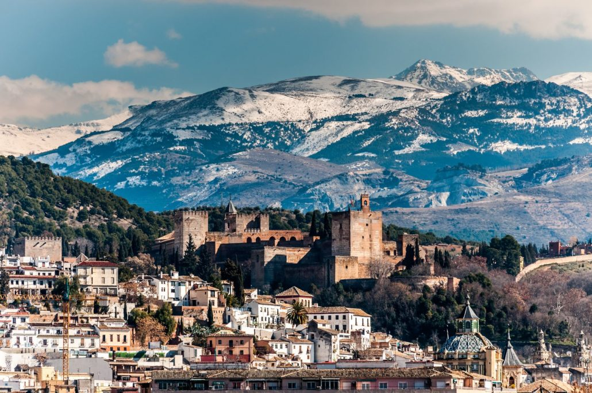
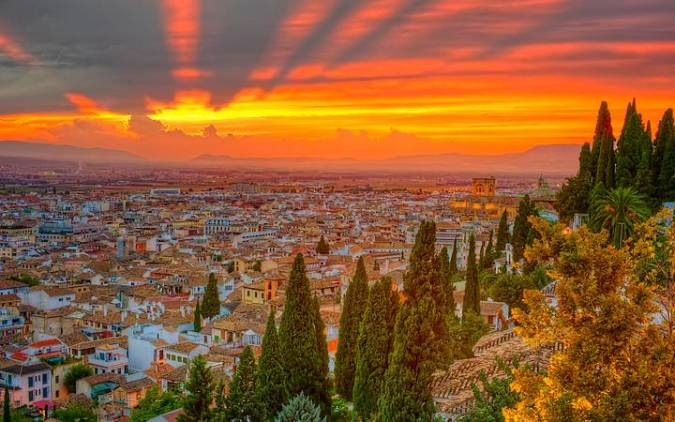

Granada es una ciudad y municipio español, capital de la provincia homónima, en la comunidad autónoma de Andalucía. Está situada en el centro de la comarca Vega de Granada, a una altitud de 680 m s. n. m., en una amplia depresión intrabética formada por el río Genil y por el piedemonte del macizo más alto de la península ibérica, Sierra Nevada, que condiciona su clima.
La Granada musulmana fue capital del Reino Zirí de Granada, durante el siglo xi, y del Reino Nazarí de Granada entre los siglos xiii y xv. Tras la toma de la ciudad por los Reyes Católicos, se mantuvo como capital del Reino castellano de Granada, que ya era una simple jurisdicción territorial y que se mantuvo hasta 1833, momento en que se produjo una nueva división provincial en España, todavía vigente. Su escudo municipal ostenta los títulos de «Muy noble, muy leal, nombrada, grande, celebérrima y heroica ciudad de Granada».
Granada constituye un núcleo receptor de turismo, debido a sus monumentos y a la cercanía de la estación de esquí de Sierra Nevada, así como a la zona histórica conocida como La Alpujarra y también a la parte de la costa granadina conocida como Costa Tropical. De entre sus construcciones históricas, la Alhambra es una de los monumentos más importantes del país, declarado Patrimonio de la Humanidad por la Unesco en 1994, junto al jardín del Generalife y el Albaicín. Su catedral está considerada como la primera iglesia renacentista de España;9 anexa a la catedral se encuentra la Capilla Real, que alberga las sepulturas de los Reyes Católicos, Isabel I de Castilla y Fernando II de Aragón, así como de la reina Juana I de Castilla «la Loca» y el rey Felipe I de Castilla, «el Hermoso».
El término municipal está situado en la parte más oriental de la depresión de Granada, en contacto con el piedemonte de Sierra Nevada.
La mayor riqueza artística de Granada es el arte hispanomusulmán y, en especial, la ciudad palatina de la Alhambra y el Generalife, este último un palacio de recreo con un jardín de planta actualmente romántica, destacable tanto por su emplazamiento y disposición como por la diversidad de flores, plantas y juegos de agua. La Alhambra es la culminación del arte nazarí, obra que se realizó en los siglos XIII y XIV, correspondiendo la mayor parte de lo edificado a la época de Yusuf I y Mohamed V, entre 1333 y 1354.
En la actualidad, la fisonomía de la ciudad de Granada es típicamente burguesa, con mucho peso de la arquitectura del XIX y numerosos edificios renacentistas y barrocos.
Durante todo el año diversos organismos, tales como la Consejería de Cultura de la Junta de Andalucía, el Ayuntamiento de la Ciudad, la Universidad y empresas privadas, organizan o patrocinan actos culturales de todo tipo. La lista que se adjunta es meramente orientativa y se limita a señalar aquellos que están mejor referenciados y gozan de mayor solera y continuidad.
Posee una amplia propuesta museística, variada y de calidad, donde se exponen colecciones de gran interés artístico, etnológico y cultural. El Museo Arqueológico y Etnológico de Granada, el Museo de Bellas Artes de Granada, el Museo de la Alhambra, el Parque de las Ciencias de Andalucía-Granada, el Centro José Guerrero, el Museo Memoria de Andalucía o la Casa-Museo de Federico García Lorca son algunas de sus mejores muestras culturales.
Como sucede en otras capitales, la Semana Santa en Granada se convierte en uno de sus acontecimientos religioso-culturales y artísticos más relevantes. Se trata de manifestaciones populares religiosas que se remontan al siglo XVIII, cuando hubo una proliferación masiva de cofradías gremiales, en su gran mayoría, al igual que en otros puntos de España.
Entre las hermandades que más interés despiertan está, tradicionalmente, la conocida popularmente como de «los Gitanos», que procesiona el Miércoles Santo, y donde los hermanos, en su mayoría de dicha etnia, conducen a sus titulares desde el centro hasta la abadía del Sacromonte.
La Feria de Granada se suele celebrar en el mes de junio si bien no tiene fecha fija de celebración porque está ligada a la festividad católica del Corpus Christi, la cual está vinculada a las fechas de Semana Santa que a su vez dependen de las de la Pascua judía, festividad lunar y por tanto variable cada año. Fue creada por los Reyes Católicos como Fiesta Mayor tras la reconquista de la ciudad.
El recinto ferial se encuentra en el barrio de Almanjáyar. Las casetas para el tapeo se alzan en el recinto ferial. En la mayoría de las casetas se pueden degustar platos propios de la tierra, pucheros, choto al ajillo, fritura de pescado, espetos de sardinas.